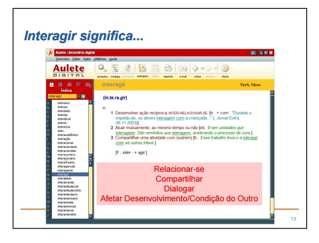
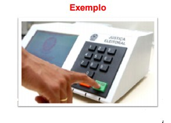
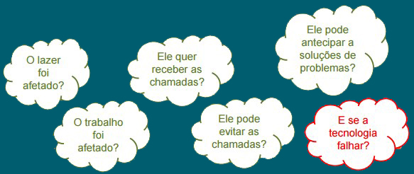
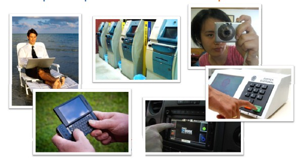
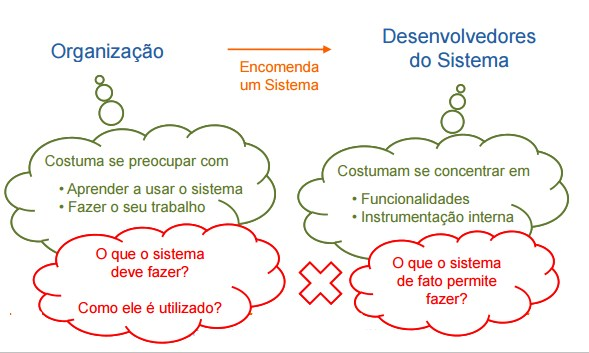
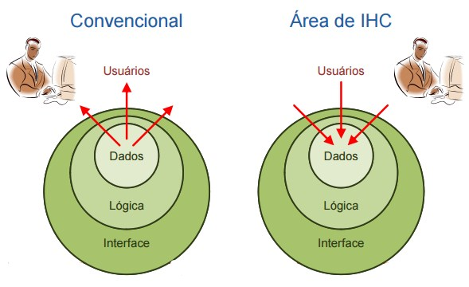
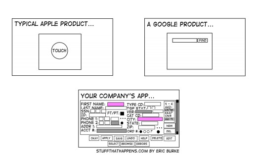

O que interagir significa ?

Tecnologias de Informação e Comunicação
TICs são sistemas computacionais compostos por:
- Hardware
- Software
- Meios de comunicação
Desenvolvidos para interagir com pessoas
Exemplos:
- Computadores, propriamente ditos.
- Sistemas de telefonia, rádio, TV, internet, etc.
Impacto dasTecnologias de Informação e Comunicação
Transformações sociais no plano mundial
- Mobilização pelo Haiti Mobilização pelo Haiti, WikiLeaks WikiLeaks,rebeliões em países árabes.
- TV e imprensa mundial a um clique de distância.
- Acesso ao conhecimento.
Transformações sociais no plano nacional
- Votação eletrônica.
- Projetos de inclusão social do governo.
Tecnologias de Informação e Comunicação
- Ocupam um espaço importante em nossas vidas
- Estão incorporadas ao nosso cotidiano
- Modificam as definições de:
Quem pode / Quem deve
Como
Quando
Onde
Por que

Exemplo de Impacto das TICs
Transição da votação em cédula papel para avotação na urna eletrônica votação na urna eletrônica
Mudança de como o eleitor manifesta o voto
Quantas pessoas (quem) sabem votar nulo (o que)na urna eletrônica?
A motivação para ovoto nulo (por que)voto nulo (por que)foi modificada?
Smartphones agregam, entre outras coisas:
Canal de comunicação
Recursos computacionais
Acesso a internet
Câmera
MP3
Jogos
GPS
Pedro (quem) faz uma caminhada (onde e quando)
Está acessível (por que) para:
Para receber chamadas do trabalho (o que)
Receber notícias de casa (o que)

Por que estudar IHC ?
1.Porque computadores estão em toda parte!

2.Porque sem pessoas para elaborar soluções ou para usar computadores usar computadores, não há computadores não há computadores
3.Porque acessibilidade digital é lei!
Interação Humano-Computador em Poucas Palavras
Desenvolver tecnologia para ajudar
Usar e construir sistemas computacionais
Produtivos
Seguros
Práticos
Agradáveis Agradáveis
Estimulantes
Avaliar sistemas e formas de interação
Diferentes Visões Sobre a Construção de Sistemas Interativos
Fabricantes de hardware
Desenvolvedores de software
Vendedores
Profissionais de suporte e manutenção
Usuários
Organizações
Exemplo Software Especializado para uma Empresa

Abordagens de Desenvolvimento

Objetos de Estudo em IHC
Natureza da interação
Contexto de uso
Características humanas
Arquitetura de sistemas computacionais
Processo de desenvolvimento
Natureza da Interação
Investigar o que ocorre enquanto as pessoas utilizam sistemas interativos.
É possível descrever e explicar.
É possível prever as conseqüências na vida das pessoas.
Contexto de Uso
Modo próprio de realizar as atividades
Conhecimentos e concepções próprios
Questões culturais e sociais influenciam
Contexto de uso do desenvolvedor geralmente é diferente do contexto do usuário
Características Humanas
Interação com novos artefatos requer capacidade cognitiva capacidade cognitiva
Tendência de utilizar interações naturais
Características físicas dos seres humanos:
Visão;
Audição;
Tato;
Capacidade de movimentar o corpo.
Arquitetura de Sistemas Computacionais
Construir sistemas que favoreçam a experiência de uso favoreçam a experiência de uso
Dispositivos de entrada e saída
Técnicas de interação
Técnicas de diálogo
Técnicas de construção de interface:
Computação gráfica;
Inteligência artificial.
Processo de Desenvolvimento
Influencia a qualidade do produto final
É importante conhecer:
Abordagens de design;
Métodos, técnicas e ferramentas de construção;
Métodos, técnicas e ferramentas de avaliação.
Avaliar casos de sucesso e de insucesso

Projete um sistema que permita...
- Calcular uma expressão aritmética;
- Informar a previsão do tempo;
- Fazer uma conversão de temperatura;
- Consultar as horas em qualquer cidade do mundo;
- Fazer uma busca na internet Fazer uma busca na internet.